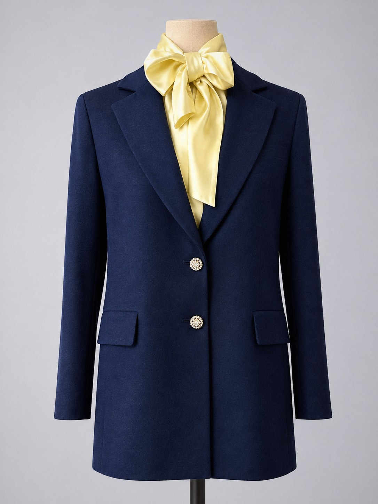
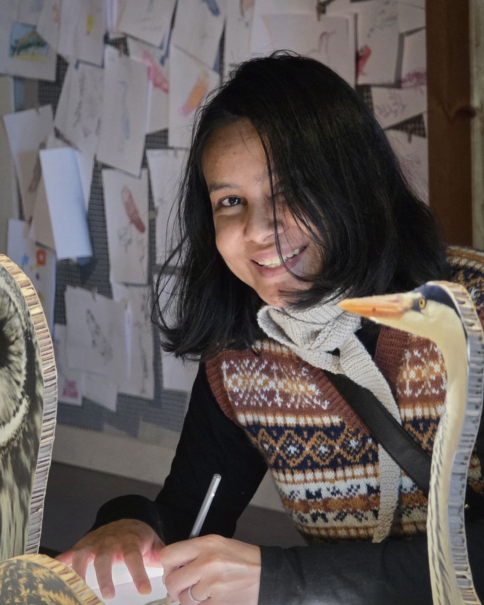

På forsidenAtelierbesøk · SEN Oslo
Når dressen ikke sitter
Riktig over skuldrene, for lang i ermene? Hos SEN Oslo begynner dressen med dine mål. Vi besøker Sheila Brox og ser hvordan farge, snitt og passform blir tilpasset kunden.
Les reportasjenFoto: Sheila Brox / SEN Oslo
Møt designeren
Alle saker
Intervju · Klyo
Fra spisebordet til garderoben
Kulani Premadasa startet sin første virksomhet i Sri Lanka. I Norge begynte hun på nytt med Klyo, der duker, gardiner og overskuddsmaterialer blir til klær. Vi snakker med henne om å velge redesign – og om å starte igjen.
Les intervjuet
Foto: Klyo / Kulani Premadasa
Oppdag
Merker med
egne ideer.
Fra skreddersøm til redesign. Bli kjent med merkene vi har møtt, og menneskene som står bak.
Utforsk merkeneOm magasinet
Det finnes mer å oppdage i norsk mote. AVANT møter små og nye merker, besøker arbeidsrommene deres og lar designerne fortelle om det de lager.
Dette er AVANTRedaksjon og bildekreditering
Kolofon
Featured Edit Nr. 01
- Utgave
- 01 · Høst 2026
- Redaksjon
- AVANT, Oslo
- Tekst
- AVANT. Intervjusvar: Kulani Premadasa
- Foto, SEN Oslo
- AVANT (besøket). Produktfoto: Sheila Brox / SEN Oslo
- Foto og video, Klyo
- Klyo / Kulani Premadasa
- Bildebehandling
- Bildene fra SEN Oslo er digitalt bearbeidet
- Utgiver
- Et studentprosjekt fra BI Oslo